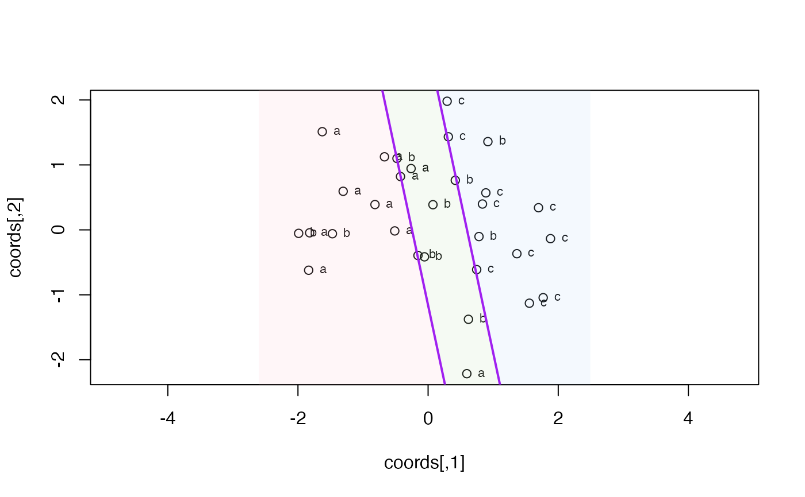

Multi-group parallel-line partition (angle + cuts searched)
axialLines.RdPartitions a 2D configuration into k >= 2 groups using k-1 parallel
separating lines. Both the slopes of the lines and their positions
are searched to minimise empirical misclassification:
Usage
axialLines(
crd,
group,
fill = FALSE,
output = TRUE,
col = "purple",
cols = NULL,
lwd = 2,
lty = 1,
n_angles = 180L,
add = TRUE
)Arguments
- crd
Numeric matrix or data frame with exactly 2 columns.
- group
Factor, character, or integer vector with
k >= 2levels.- fill
If
TRUE, shade thekstrips between consecutive lines.- output
If
TRUE(default), return a list of results.- col
Separator line colour (default
"purple").- cols
Length-
kfill colours; auto-generated ifNULL.- lwd
Line width (default
2).- lty
Line type (default
1).- n_angles
Number of angles in
[0, pi)to scan (default180L, approximately 1-degree resolution); LDA's direction is added as an extra candidate.- add
If
TRUE(default), add to existing plot; ifFALSE, callplot()first.
Value
If output = TRUE, a list with:
slope— shared slope of the lines (Infif vertical)intercepts—numeric[k-1], y-intercepts (or x-positions if vertical)angle— winning direction in radiansmargin— minimum perpendicular distance from the cut line(s) to the nearest pointmisclass— total misclassified pointsmisclass_points— data frame (x,y,label) of misclassified pointssector—integer[n], sector1..kper point in input ordermajority—character[k], majority group per sector
Details
Angle: grid of
n_anglesequally-spaced angles in[0, pi), augmented by LDA's LD1 direction. For each angletheta, points are projected onto(cos theta, sin theta).Cuts: for each angle, exact brute-force enumeration over all
C(n-1, k-1)ways to split the sorted projections intoksegments.
The (angle, cuts) combination with lowest total misclassification wins.
Tie-breaker: among configurations with the same misclass count, the one
with the largest minimum margin (perpendicular distance from a cut line
to the nearest point) is preferred — keeps cut lines visually away from
the data points.
For k = 2, axialLines() can differ from axialLine():
the latter places the cut at the midpoint of class means on the LD1
projection (classical Bayes rule under normality), while axialLines()
searches the full (angle, cut) space for the empirical optimum.
Vertical-line guard: when the winning direction has w[2] ~= 0, the
separators are vertical. slope is returned as Inf and intercepts
carry the x-positions of the lines.
See also
axialLine() for the classical LDA Bayes-rule boundary
(closed-form, binary only) if k=2. Use axialLine() when you want the
statistical LDA classifier; use axialLines() when you want the
empirically optimal parallel-line partition.
Examples
set.seed(1)
crd <- rbind(cbind(rnorm(10, -1), rnorm(10)),
cbind(rnorm(10, 0), rnorm(10)),
cbind(rnorm(10, 1), rnorm(10)))
grp <- factor(c(rep("a", 10), rep("b", 10), rep("c", 10)))
axialLines(crd, grp, fill = TRUE, add = FALSE)

#> $slope
#> [1] -4.70463
#>
#> $intercepts
#> [1] -1.162032 2.813375
#>
#> $angle
#> [1] 0.2094395
#>
#> $margin
#> [1] 0.002606886
#>
#> $misclass
#> [1] 6
#>
#> $misclass_points
#> x y label
#> 1 0.5952808 -2.21469989 a
#> 2 -0.2616753 0.94383621 a
#> 3 0.9189774 1.35867955 b
#> 4 0.7821363 -0.10278773 b
#> 5 -1.9893517 -0.05380504 b
#> 6 -1.4707524 -0.05931340 b
#>
#> $sector
#> [1] 1 1 1 2 1 1 1 2 1 1 3 3 2 1 2 2 2 1 2 2 3 3 3 3 3 3 3 3 3 3
#>
#> $majority
#> [1] "a" "b" "c"
#>